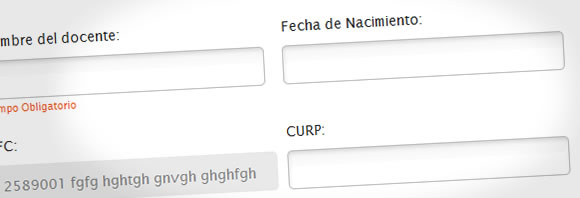
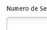
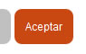

Laureate LNPS / Development Team
Design Extras Repository Documentation
"Design Extras" is a CSS source that improves and standardizes the appearence UI elements that are used most throug all diferents portals and interfaces of the Laureate Products network.
Stylesheet URL:
https://my.laureate.net/Style%20Library/cssextras/extras.css
1. FORMS INPUTS

.input-gradient - Assign this selector to text and option inputs. It includes a gradient background (png image) and also rounded corners for CSS3 capable browsers.

.grey-button - Assign this class to submit-type inputs that are "disabled" or with less visual priority (ie: Cancel a form)

2. NO-INPUT BUTTONS
.button - Assign this selector to a text link to make it look like an orange button with rounded corners (rounded corners for CSS3 capable browsers only)

.icon-cancel - Assign this selector to a link to replace the text of the link for a "cancel" icon image (background)